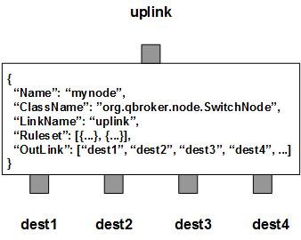

SwitchNode is a static router node that applies content switch operation on each incoming messages. The incoming JMS messages will be routed to various destinations (outlinks) according to their content, and preconfigured rulesets. SwitchNode contains at least one predefined ruleset for the switch operation. Each ruleset categorize messages into non-overlapping groups. Therefore, each ruleset defines a unique message group and associates it with a specific destination. A ruleset can also specify a shared report. So that the routing rules may be changed on the fly. SwitchNode should have at least one ouklink as the destination.
SwitchNode also supports customized routing rules via plugins. In this case, the full ClassName of the router and its RouterArgument must be well defined in the ruleset. The developers of the plugin router are supposed to document the details of RouterArgument. SwitchNode will load the router and routes the messages for the ruleset.
A ruleset is supposed to specify the type of the ruleset. Currently, SwitchNode supports 3 types, preferred, sticky and weighted. The type of preferred routes the messages to the preferred outlink. The type of sticky is also a static routing rule which uses certain hash value to decide which outlink to route. The type of weighted is for dynamic routing with plugin support.
SwitchNode always adds an extra ruleset for the nohit messages. It assumes the last outlink is always for nohit, unless NohitOutLink is defined. This nohit ruleset is always the first ruleset with the id of 0. On the node level, DisplayMask and StringProperty control the display result of outgoing messages.
Apart from the common properties, there are two implementation specific properties for SwitchNode.
| Property Name | Data Type | Requirement | Description | Examples |
|---|---|---|---|---|
| SessionTimeout | integer | optional | timeout for the session in sec | 120 (default: 300) |
| Heartbeat | integer | optional | interval in sec to check shared reports | 30 (default: 60) |
The switch operation is executed via the pre-defined rulesets. Therefore, the configuration of the rulesets is critical to the operations of SwitchNode. Here are complete properties of rulesets for SwitchNode.
| Property Name | Data Type | Requirement | Description | Examples |
|---|---|---|---|---|
| Name | alphanumeric with no spaces | mandatory | name of the ruleset | event |
| RuleType | string of preferred, sticky or weighted | mandatory | type of the ruleset | preferred |
| PreferredOutLink | alphanumeric with no spaces | mandatory for preferred only | name of the preferred outlink | DAM_IN |
| ReportName | alphanumeric with no spaces | optional | name of the shared report to turn on/off this ruleset | aps1_rpt |
| KeyTemplate | string | optional | template for the sticky key | ##site## |
| KeySubstitution | string | optional | text subsctitution for the sticky key | s/^0// |
| ClassName | alphanumeric with no spaces | optional | full classname of the plugin | org.qbroker.ipe.IpeRouter |
| RouterArgument | string, map or list | mandatory for plugin only | configuration data for plugin | see example |
| FormatterArgument | list | optional | list of post format operations | see example |
| JMSPropertyGroup | list | optional | list of pattern groups on properties to select messages | see example |
| XJMSPropertyGroup | list | optional | list of pattern groups on properties to exclude messages | see example |
| PatternGroup | list | optional | list of pattern groups on body to select messages | see example |
| XPatternGroup | list | optional | list of pattern groups on body to exclude messages | see example |
| StringProperty | map | optional | for setting the user properties on the messages | see example |
{
...
"Ruleset": [{
"Name": "bypass",
"RuleType": "preferred",
"PreferredOutLink": "BYPASS",
"JMSPropertyGroup": [{
"JMSType": "^score$"
}]
}],
...
}
where it routes the messages to the outlink of BYPASS.
Here is an example of the sticky ruleset.
{
...
"Ruleset": [{
"Name": "data",
"RuleType": "sticky",
"KeyTemplate": "##site##",
"JMSPropertyGroup": [{
"context": "^data$"
}]
}],
...
}
where it calcautes the hash value from the key and routes the messages
to the outlink mapped from the hash value. Different keys will have different
hash values. Therefore, the messages will be routed to different outlinks
according to their key values.
Here is an example of the weighted ruleset with a plugin.
{
...
"Ruleset": [{
"Name": "ipe",
"RuleType": "weighted",
"ClassName": "org.qbroker.shared.IpeRouter",
"JMSPropertyGroup": [{
"JMSType": "^ipe$"
}],
"RouterArgument": [{
"Name": "ipe_router",
"QueueIndex": {
"ARDENDO_IN": "0",
"DAM_IN": "1",
"MG_IN": "2"
},
"QueueMapping": {
"ARDENDO_IN": {
"context": "FEEDS",
"siteId": "ATL",
"AppName": "ARDENDO"
},
"DAM_IN": {
"context": "DAM",
"siteId": "ATL",
"AppName": "DAM"
},
"MG_IN": {
"context": "MOVER",
"siteId": "ATL",
"AppName": "MG"
}
}
}]
}],
...
}
where it invokes the plugin on the messages and routes the them to the
outlinks dynamically determined by the plugin.
Here is an example of SwitchNode:
{
"Name": "node_switch",
"ClassName": "org.qbroker.node.SwitchNode",
"Description": "switch messages",
"Operation": "switch",
"LinkName": "parsed",
"Capacity": "6",
"WaitTime": "50",
"DisplayMask": "0",
"Ruleset": [{
"Name": "score",
"RuleType": "preferred",
"PreferredOutLink": "gamesync",
"JMSPropertyGroup": [{
"JMSType": "^score$"
}]
},{
"Name": "event",
"RuleType": "preferred",
"PreferredOutLink": "event",
"JMSPropertyGroup": [{
"JMSType": "^event$"
}]
}],
"OutLink": ["gamesync", "event"]
}